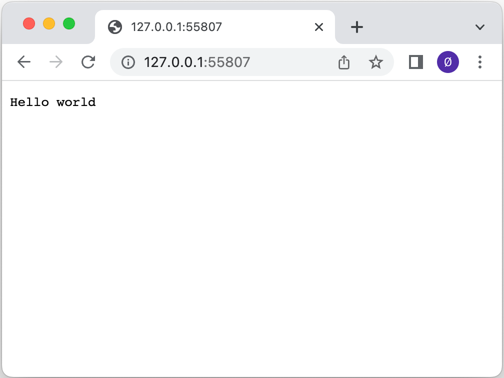

Simple HTTP Server
Simple example of how to set up an HTTP server.

The Simple HTTP Server shows how to set up an HTTP server using the QHttpServer class. It listens to two sockets: one TCP socket and one SSL socket. Different callbacks are set up to demonstrate how to use the route() function.
A QHttpServer object is created, and a simple route() handles the path "/" by returning Hello world:
QCoreApplication app(argc, argv); QHttpServer httpServer; httpServer.route("/", []() { return "Hello world"; });
Then we register a callback that serves the server's assets to the client:
httpServer.route("/assets/<arg>", [] (const QUrl &url) { return QHttpServerResponse::fromFile(u":/assets/"_s + url.path()); });
Here we use the QHttpServerRequest object to return the client's IP address:
httpServer.route("/remote_address", [](const QHttpServerRequest &request) { return request.remoteAddress().toString(); });
For one of the paths, "/auth", Basic HTTP Authentication is used:
httpServer.route("/auth", [](const QHttpServerRequest &request) { auto auth = request.value("authorization").simplified(); if (auth.size() > 6 && auth.first(6).toLower() == "basic ") { auto token = auth.sliced(6); auto userPass = QByteArray::fromBase64(token); if (auto colon = userPass.indexOf(':'); colon > 0) { auto userId = userPass.first(colon); auto password = userPass.sliced(colon + 1); if (userId == "Aladdin" && password == "open sesame") return QHttpServerResponse("text/plain", "Success\n"); } } QHttpServerResponse resp("text/plain", "Authentication required\n", QHttpServerResponse::StatusCode::Unauthorized); auto h = resp.headers(); h.append(QHttpHeaders::WellKnownHeader::WWWAuthenticate, R"(Basic realm="Simple example", charset="UTF-8")"); resp.setHeaders(std::move(h)); return std::move(resp); });
Then we use the addAfterRequestHandler() function to change the QHttpServerResponse object after it has been handled by the callbacks registered by route() by adding HTTP headers to the response:
httpServer.addAfterRequestHandler(&httpServer, [](const QHttpServerRequest &, QHttpServerResponse &resp) { auto h = resp.headers(); h.append(QHttpHeaders::WellKnownHeader::Server, "Qt HTTP Server"); resp.setHeaders(std::move(h)); });
A QTcpServer listening to a port is bound to the HTTP server using the bind() function:
auto tcpserver = std::make_unique<QTcpServer>(); if (!tcpserver->listen() || !httpServer.bind(tcpserver.get())) { qWarning() << QCoreApplication::translate("QHttpServerExample", "Server failed to listen on a port."); return -1; } quint16 port = tcpserver->serverPort(); tcpserver.release();
And then QSslConfiguration is used to create an SSL configuration for a QHttpServer to serve HTTPS traffic:
QSslConfiguration conf = QSslConfiguration::defaultConfiguration(); const auto sslCertificateChain = QSslCertificate::fromPath(QStringLiteral(":/assets/certificate.crt")); if (sslCertificateChain.empty()) { qWarning() << QCoreApplication::translate("QHttpServerExample", "Couldn't retrieve SSL certificate from file."); return -1; } QFile privateKeyFile(QStringLiteral(":/assets/private.key")); if (!privateKeyFile.open(QIODevice::ReadOnly)) { qWarning() << QCoreApplication::translate("QHttpServerExample", "Couldn't open file for reading: %1") .arg(privateKeyFile.errorString()); return -1; } conf.setLocalCertificate(sslCertificateChain.front()); conf.setPrivateKey(QSslKey(&privateKeyFile, QSsl::Rsa)); privateKeyFile.close(); auto sslserver = std::make_unique<QSslServer>(); sslserver->setSslConfiguration(conf); if (!sslserver->listen() || !httpServer.bind(sslserver.get())) { qWarning() << QCoreApplication::translate("QHttpServerExample", "Server failed to listen on a port."); return -1; } quint16 sslPort = sslserver->serverPort(); sslserver.release();
After everything is set up, all that remains is to start handling incoming requests:
return app.exec();
Files:
Images:
{kind=link}